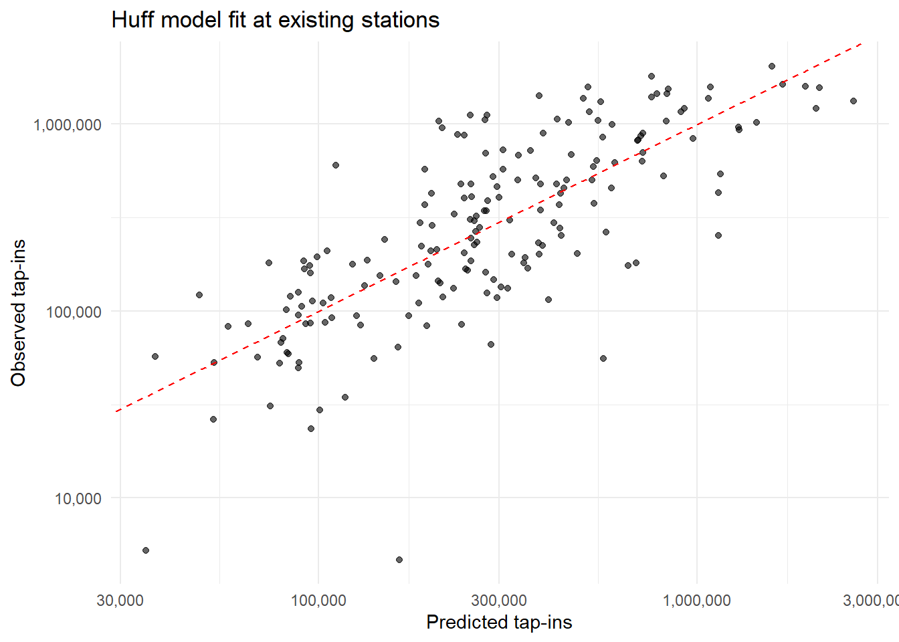
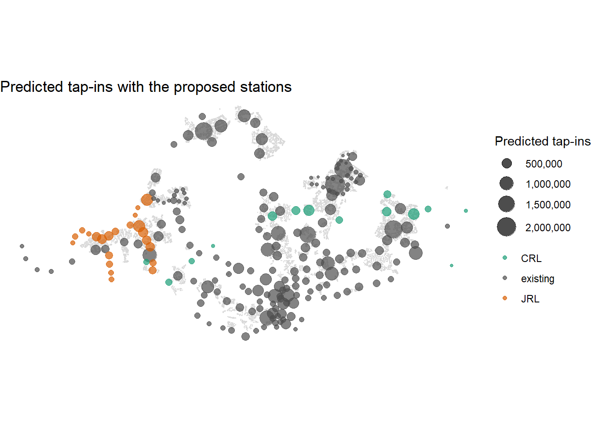
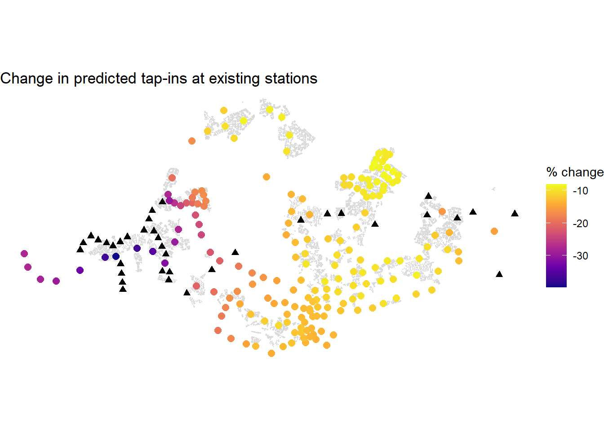

pacman::p_load(sf, tidyverse, tmap)Geospatial Analytics for Urban Sustainability
Take-home Exercise 3: MRT Station Ridership in Singapore
Data Preparation and Quality Assessment
Data Import
Finds each downloaded file by pattern, so the code does not depend on folder nesting, then reads it. The shapefiles and the HDB GeoJSON are read with st_read(), and the two CSV files with read_csv(). The last chunk prints the column names of all six datasets.
od_file <- list.files("data/aspatial", pattern = "origin_destination.*\\.csv$",
recursive = TRUE, full.names = TRUE)[1]
od_raw <- read_csv(od_file)
stations_csv <- read_csv("data/aspatial/operational_and_future_stations.csv")find_file <- function(pattern) {
list.files("data/geospatial", pattern = pattern,
recursive = TRUE, full.names = TRUE)[1]
}
stations_shp <- st_read(find_file("RapidTransitSystemStation\\.shp$"))Reading layer `RapidTransitSystemStation' from data source
`D:\1.Abinav\1.SMU\Term 4\Geospatial Analysis\Abinav0905\GAA-Abinav-Test\Take_Home_Ex\Take_HomeEx03\data\geospatial\RapidTransitSystemStation.shp'
using driver `ESRI Shapefile'
Simple feature collection with 234 features and 15 fields
Geometry type: MULTIPOLYGON
Dimension: XY
Bounding box: xmin: 6068.209 ymin: 27478.44 xmax: 45377.5 ymax: 47913.58
Projected CRS: SVY21bus_stops <- st_read(find_file("BusStop\\.shp$"))Reading layer `BusStop' from data source
`D:\1.Abinav\1.SMU\Term 4\Geospatial Analysis\Abinav0905\GAA-Abinav-Test\Take_Home_Ex\Take_HomeEx03\data\geospatial\BusStop.shp'
using driver `ESRI Shapefile'
Simple feature collection with 5205 features and 15 fields
Geometry type: POINT
Dimension: XY
Bounding box: xmin: 3953.168 ymin: 26001.96 xmax: 49889.35 ymax: 52992.58
Projected CRS: SVY21exits <- st_read(find_file("Train_Station_Exit_Layer\\.shp$"))Reading layer `Train_Station_Exit_Layer' from data source
`D:\1.Abinav\1.SMU\Term 4\Geospatial Analysis\Abinav0905\GAA-Abinav-Test\Take_Home_Ex\Take_HomeEx03\data\geospatial\Train_Station_Exit_Layer.shp'
using driver `ESRI Shapefile'
Simple feature collection with 613 features and 2 fields
Geometry type: POINT
Dimension: XY
Bounding box: xmin: 6134.086 ymin: 27499.7 xmax: 45356.36 ymax: 47865.92
Projected CRS: SVY21hdb <- st_read(find_file("\\.geojson$"))Reading layer `HDB_ACTIVE_BLK_P' from data source
`D:\1.Abinav\1.SMU\Term 4\Geospatial Analysis\Abinav0905\GAA-Abinav-Test\Take_Home_Ex\Take_HomeEx03\data\geospatial\HDBExistingBuilding.geojson'
using driver `GeoJSON'
Simple feature collection with 13509 features and 9 fields
Geometry type: MULTIPOLYGON
Dimension: XY
Bounding box: xmin: 103.6848 ymin: 1.270005 xmax: 103.989 ymax: 1.457245
Geodetic CRS: WGS 84names(od_raw)[1] "YEAR_MONTH" "DAY_TYPE" "TIME_PER_HOUR"
[4] "PT_TYPE" "ORIGIN_PT_CODE" "DESTINATION_PT_CODE"
[7] "TOTAL_TRIPS" names(stations_csv)[1] "station_code" "station_name" "lat" "lon" "source"
[6] "comment" names(stations_shp) [1] "JOB_NUM" "TYP_CD" "STN_NAM" "EXCEPTION_" "LAST_UPD_U"
[6] "LAST_UPD_D" "CRT_USRID_" "CRT_DTTM" "RTS_LVL_NU" "LIN_NAM"
[11] "PKG_REF" "REMARKS" "ATTACHEMEN" "SHAPE_AREA" "SHAPE_LEN"
[16] "geometry" names(bus_stops) [1] "JOB_NUM" "BUS_STOP_N" "BUS_ROOF_N" "STATUS" "SERVICE_TY"
[6] "LVL_NUM" "RD_CD" "LOC_DESC" "PKG_REF" "EXCEPTION_"
[11] "LAST_UPD_U" "LAST_UPD_D" "CRT_USRID_" "CRT_DTTM" "REMARKS"
[16] "geometry" names(exits)[1] "stn_name" "exit_code" "geometry" names(hdb) [1] "OBJECTID" "BLK_NO" "ST_COD" "ENTITYID" "POSTAL_COD"
[6] "INC_CRC" "FMEL_UPD_D" "SHAPE.AREA" "SHAPE.LEN" "geometry" Station Table and Observed Ridership
Builds one row per station from the CSV, which holds both the existing and the planned stations. Observed ridership is the total tap-ins at each station in September 2026, summed over all day types and hours. The ridership data is matched to stations by station code. Stations in the CSV with no ridership are labelled “proposed”, and the rest are “existing”.
code_split <- function(x) str_split(str_to_upper(x), "[^A-Z0-9]+")
stations_csv <- stations_csv %>%
mutate(station_name = str_to_upper(str_squish(station_name)))
code_map <- stations_csv %>%
mutate(code = code_split(station_code)) %>%
unnest(code) %>%
filter(code != "") %>%
distinct(code, .keep_all = TRUE) %>%
select(code, station_name)
pick_code <- function(codes) {
hit <- codes[codes %in% code_map$code]
if (length(hit) == 0) NA_character_ else hit[1]
}
tapin <- od_raw %>%
group_by(ORIGIN_PT_CODE) %>%
summarise(tapin = sum(TOTAL_TRIPS), .groups = "drop") %>%
mutate(code = map_chr(code_split(ORIGIN_PT_CODE), pick_code)) %>%
left_join(code_map, by = "code")
station_ridership <- tapin %>%
filter(!is.na(station_name)) %>%
group_by(station_name) %>%
summarise(tapin = sum(tapin), .groups = "drop")
stations <- stations_csv %>%
group_by(station_name) %>%
summarise(station_code = first(station_code),
lat = mean(lat), lon = mean(lon), .groups = "drop") %>%
left_join(station_ridership, by = "station_name") %>%
mutate(status = if_else(is.na(tapin), "proposed", "existing"))tapin %>% filter(is.na(station_name)) %>% pull(ORIGIN_PT_CODE)character(0)stations %>% count(status)# A tibble: 2 × 2
status n
<chr> <int>
1 existing 184
2 proposed 47stations %>%
filter(status == "proposed") %>%
count(prefix = str_extract(station_code, "^[A-Za-z]+"))# A tibble: 10 × 2
prefix n
<chr> <int>
1 CC 1
2 CP 1
3 CR 13
4 DE 2
5 DT 2
6 JE 6
7 JS 11
8 JW 5
9 NS 1
10 TE 5Study Stations
Keeps the existing stations and the new Jurong Region Line and Cross Island Line stations, and drops the 11 stations on other future lines. The number of lines at each station is read from the ridership station codes, so interchanges count as more than one. Coordinates are converted to the Singapore projected CRS (EPSG:3414), so distances come out in metres.
lines_df <- od_raw %>%
distinct(ORIGIN_PT_CODE) %>%
mutate(code = map_chr(code_split(ORIGIN_PT_CODE), pick_code),
n_codes = lengths(code_split(ORIGIN_PT_CODE))) %>%
left_join(code_map, by = "code") %>%
group_by(station_name) %>%
summarise(n_lines = max(n_codes), .groups = "drop")
stations_sf <- stations %>%
left_join(lines_df, by = "station_name") %>%
mutate(n_lines = replace_na(n_lines, 1),
line_group = case_when(
status == "existing" ~ "existing",
str_detect(station_code, "^(JE|JS|JW)") ~ "JRL",
str_detect(station_code, "^(CR|CP)") ~ "CRL",
TRUE ~ "other")) %>%
filter(line_group != "other", !is.na(lat), !is.na(lon)) %>%
st_as_sf(coords = c("lon", "lat"), crs = 4326) %>%
st_transform(3414)
stations_sf %>% st_drop_geometry() %>% count(line_group)# A tibble: 3 × 2
line_group n
<chr> <int>
1 CRL 14
2 JRL 22
3 existing 184Origins and Local Market Potential
Each HDB building becomes an origin, located at its centroid. The HDB data has no population or dwelling-unit column, so the building footprint area (m2) is used as the proxy for local market potential. Invalid geometries are repaired, and empty or zero-area buildings are removed.
origins <- hdb %>%
st_make_valid() %>%
st_transform(3414) %>%
filter(!st_is_empty(geometry)) %>%
mutate(market_potential = as.numeric(st_area(geometry))) %>%
filter(market_potential > 0) %>%
st_centroid() %>%
mutate(origin = row_number()) %>%
select(origin, market_potential)
nrow(origins)[1] 13509summary(origins$market_potential) Min. 1st Qu. Median Mean 3rd Qu. Max.
8.049 802.040 1089.585 1297.917 1429.120 67588.178 Destination Attributes
Attraction variables for each station: the number of bus stops within 500 m, the total HDB footprint area within 800 m, and the number of lines serving the station. These are computed the same way for existing and proposed stations.
bus_sf <- st_transform(bus_stops, 3414)
stations_sf <- stations_sf %>%
mutate(bus_500m = lengths(st_is_within_distance(geometry, bus_sf, dist = 500)),
hdb_area_800m = map_dbl(
st_is_within_distance(geometry, origins, dist = 800),
~ sum(origins$market_potential[.x])))
stations_sf %>%
st_drop_geometry() %>%
group_by(line_group) %>%
summarise(across(c(bus_500m, hdb_area_800m, n_lines), median))# A tibble: 3 × 4
line_group bus_500m hdb_area_800m n_lines
<chr> <dbl> <dbl> <dbl>
1 CRL 6.5 65712. 1
2 JRL 10.5 91466. 1
3 existing 13.5 104680. 1Spatial Interaction Data Frames
Builds the two spatial interaction data frames, one row per origin and station pair: one for the existing stations, one for existing plus proposed. Distance is the straight-line distance in metres between the HDB centroid and the station. Distances under 100 m are set to 100 m so that a block next to a station does not get an infinite attraction.
dist_mat <- st_distance(stations_sf, origins)
make_si <- function(keep) {
d <- as.numeric(dist_mat[keep, , drop = FALSE])
st <- stations_sf[keep, ] %>% st_drop_geometry()
tibble(destination = rep(st$station_name, times = nrow(origins)),
origin = rep(origins$origin, each = nrow(st)),
distance = pmax(d, 100))
}
si_existing <- make_si(stations_sf$line_group == "existing")
si_proposed <- make_si(rep(TRUE, nrow(stations_sf)))
nrow(si_existing)[1] 2485656nrow(si_proposed)[1] 2971980Probabilistic Spatial Interaction Modelling
Huff Model Setup
Each origin splits its demand between all stations using the Huff share P(i,j) = A(j) x d(i,j)^-beta / sum over all stations. Station attractiveness A(j) is the product of the bus stops within 500 m, the HDB area within 800 m and the number of lines, each raised to its own exponent, times an MRT/LRT factor. LRT stations are small feeder stations, so a separate factor is fitted for them. Predicted ridership at a station is the sum over origins of share x local market potential, scaled by one constant. Total demand is held fixed, so a new station can only take ridership from other stations.
lrt_prefix <- "^(BP|SE|SW|PE|PW|STC|PTC)"
lrt <- as.numeric(map_lgl(code_split(stations_sf$station_code),
~ length(.x[.x != ""]) > 0 &&
all(str_detect(.x[.x != ""], lrt_prefix))))
D <- matrix(as.numeric(dist_mat), nrow = nrow(dist_mat))
D[D < 100] <- 100
logD <- log(D)
M <- origins$market_potential
ex <- which(stations_sf$line_group == "existing")
obs_ex <- stations_sf$tapin[ex]
log_bus <- log(stations_sf$bus_500m + 1)
log_hdb <- log(stations_sf$hdb_area_800m + 1)
log_lines <- log(stations_sf$n_lines)
huff_demand <- function(par, idx) {
Z <- (par[2] * log_bus[idx] + par[3] * log_hdb[idx] +
par[4] * log_lines[idx] + par[5] * lrt[idx]) -
par[1] * logD[idx, , drop = FALSE]
Z <- sweep(Z, 2, apply(Z, 2, max))
U <- exp(Z)
P <- sweep(U, 2, colSums(U), "/")
as.vector(P %*% M)
}
sum(is.na(obs_ex))[1] 0table(lrt[ex])
0 1
145 39 Calibration
Finds the distance decay (beta), the three attractiveness exponents and the LRT factor that best match observed September 2026 tap-ins at the existing stations. The fit minimises squared error on the log scale, so large and small stations count equally. It is run from two different starting points and the better result is kept, to avoid a poor local optimum. The scaling constant is solved after the fit and applied unchanged to the predictions later. This chunk can take a few minutes.
loss <- function(par) {
lr <- log(obs_ex) - log(huff_demand(par, ex) + 1e-9)
sum((lr - mean(lr))^2)
}
starts <- list(c(1, 0.3, 0.3, 0.3, -1), c(2, 0.5, 0, 1, -1))
fits <- lapply(starts, function(s)
optim(s, loss, method = "L-BFGS-B",
lower = c(0, -3, -3, -3, -5), upper = c(6, 3, 3, 3, 5)))
fit <- fits[[which.min(map_dbl(fits, "value"))]]
par_hat <- fit$par
names(par_hat) <- c("beta", "alpha_bus", "alpha_hdb", "alpha_lines", "lrt_factor")
pred_ex_only <- huff_demand(par_hat, ex)
k <- exp(mean(log(obs_ex) - log(pred_ex_only + 1e-9)))
pred_fit <- k * pred_ex_only
round(par_hat, 3) beta alpha_bus alpha_hdb alpha_lines lrt_factor
1.318 0.509 -0.014 1.684 -2.110 fit$convergence[1] 0cat("R2 (log scale):", round(cor(log(obs_ex), log(pred_fit))^2, 3), "\n")R2 (log scale): 0.578 cat("R2 (raw scale):", round(cor(obs_ex, pred_fit)^2, 3), "\n")R2 (raw scale): 0.49 cat("RMSE:", round(sqrt(mean((obs_ex - pred_fit)^2))), "\n")RMSE: 340877 tibble(station = stations_sf$station_name[ex],
observed = obs_ex,
predicted = round(pred_fit)) %>%
mutate(log_ratio = round(log(observed / predicted), 2)) %>%
arrange(desc(abs(log_ratio))) %>%
head(8)# A tibble: 8 × 4
station observed predicted log_ratio
<chr> <dbl> <dbl> <dbl>
1 KEPPEL 4681 163530 -3.55
2 RIVIERA 55684 566453 -2.32
3 TECK LEE 5244 35044 -1.9
4 CHANGI AIRPORT 601573 111138 1.69
5 TANJONG PAGAR 1039599 208024 1.61
6 CALDECOTT 252890 1138081 -1.5
7 SOMERSET 955026 212063 1.5
8 NOVENA 1119281 251304 1.49Prediction and Impact of the Proposed Stations
Predicted Ridership
Uses the fitted Huff model to predict station-level ridership in two scenarios: the existing network only, and the existing network plus the 36 proposed Jurong Region Line and Cross Island Line stations. The scaling constant and all parameters are the ones fitted on the existing stations, so the two scenarios are directly comparable.
all_idx <- seq_len(nrow(stations_sf))
stations_pred <- stations_sf %>%
mutate(pred_before = NA_real_,
pred_after = k * huff_demand(par_hat, all_idx))
stations_pred$pred_before[ex] <- pred_fitImpact on Existing Stations
Compares each existing station’s predicted ridership before and after the proposed stations open. In a Huff model total demand is fixed, so a new station can only take ridership from others. Every existing station therefore loses or keeps its ridership, and the question is by how much. Induced demand, meaning trips that only exist because of the new lines, is not modelled.
impact <- stations_pred %>%
filter(line_group == "existing") %>%
mutate(change = pred_after - pred_before,
pct_change = 100 * change / pred_before)
new_st <- stations_pred %>% filter(line_group != "existing")
cat("Share of total predicted demand taken by new stations (%):",
round(100 * sum(new_st$pred_after) / sum(stations_pred$pred_after), 1), "\n")Share of total predicted demand taken by new stations (%): 14 impact %>%
st_drop_geometry() %>%
arrange(pct_change) %>%
transmute(station_name, pred_before = round(pred_before),
pred_after = round(pred_after), pct_change = round(pct_change, 1)) %>%
head(10)# A tibble: 10 × 4
station_name pred_before pred_after pct_change
<chr> <dbl> <dbl> <dbl>
1 BOON LAY 555453 334307 -39.8
2 PIONEER 828562 522018 -37
3 LAKESIDE 547671 345922 -36.8
4 CHINESE GARDEN 593110 384080 -35.2
5 JOO KOON 252246 168683 -33.1
6 JURONG EAST 1579617 1081998 -31.5
7 SOUTH VIEW 129243 90885 -29.7
8 GUL CIRCLE 132567 93458 -29.5
9 BUKIT BATOK 697503 492903 -29.3
10 TUAS CRESCENT 145538 104338 -28.3new_st %>%
st_drop_geometry() %>%
arrange(desc(pred_after)) %>%
transmute(station_name, line_group, pred_after = round(pred_after)) %>%
head(10)# A tibble: 10 × 3
station_name line_group pred_after
<chr> <chr> <dbl>
1 TENGAH PLANTATION JRL 700097
2 CHOA CHU KANG WEST JRL 696692
3 PASIR RIS EAST CRL 637698
4 SERANGOON NORTH CRL 590280
5 TENGAH PARK JRL 483617
6 BAHAR JUNCTION JRL 454826
7 BUKIT BATOK WEST JRL 435268
8 GEK POH JRL 434917
9 TOH GUAN JRL 410676
10 TECK GHEE CRL 409412Geovisualisation and Geocommunication
Model Fit
Observed against predicted September 2026 tap-ins at the existing stations, on log scales. Points on the dashed line are perfect predictions.
fit_df <- tibble(station = stations_sf$station_name[ex],
observed = obs_ex, predicted = pred_fit)
ggplot(fit_df, aes(predicted, observed)) +
geom_point(alpha = 0.6) +
geom_abline(slope = 1, intercept = 0, colour = "red", linetype = "dashed") +
scale_x_log10(labels = scales::comma) +
scale_y_log10(labels = scales::comma) +
labs(x = "Predicted tap-ins", y = "Observed tap-ins",
title = "Huff model fit at existing stations") +
theme_minimal()
Predicted Ridership Map
Predicted monthly tap-ins for existing and proposed stations, with HDB building locations in light grey to show the island outline.
ggplot() +
geom_sf(data = origins, colour = "grey85", size = 0.05) +
geom_sf(data = stations_pred, aes(size = pred_after, colour = line_group), alpha = 0.7) +
scale_size_area(max_size = 8, labels = scales::comma, name = "Predicted tap-ins") +
scale_colour_manual(values = c(existing = "grey30", JRL = "#d95f02", CRL = "#1b9e77"),
name = NULL) +
labs(title = "Predicted tap-ins with the proposed stations") +
theme_void()
Impact Map
Percentage change in predicted ridership at each existing station once the proposed stations (black triangles) open.
ggplot() +
geom_sf(data = origins, colour = "grey85", size = 0.05) +
geom_sf(data = impact, aes(colour = pct_change), size = 2.5) +
geom_sf(data = new_st, shape = 17, size = 2, colour = "black") +
scale_colour_viridis_c(option = "plasma", name = "% change") +
labs(title = "Change in predicted tap-ins at existing stations") +
theme_void()
Value-Added Analysis: Sensitivity to the Distance Decay Form
The main model uses power decay, where demand falls with distance^-beta. An alternative probabilistic spatial interaction specification is exponential decay, where demand falls with exp(-beta x distance in km). It treats nearby and distant stations differently, so it could change which existing stations lose ridership. The model is refitted on the same existing stations with the same attractiveness variables, and its fit and predicted impact are compared with the power-decay model. If the two agree, the conclusion does not depend on the choice of decay form.
huff_demand_exp <- function(par, idx) {
Z <- (par[2] * log_bus[idx] + par[3] * log_hdb[idx] +
par[4] * log_lines[idx] + par[5] * lrt[idx]) -
par[1] * D[idx, , drop = FALSE] / 1000
Z <- sweep(Z, 2, apply(Z, 2, max))
U <- exp(Z)
P <- sweep(U, 2, colSums(U), "/")
as.vector(P %*% M)
}
loss_exp <- function(par) {
lr <- log(obs_ex) - log(huff_demand_exp(par, ex) + 1e-9)
sum((lr - mean(lr))^2)
}
fit_exp <- optim(c(1, 0.5, 0, 1.5, -2), loss_exp, method = "L-BFGS-B",
lower = c(0, -3, -3, -3, -5), upper = c(10, 3, 3, 3, 5))
par_exp <- fit_exp$par
names(par_exp) <- c("beta", "alpha_bus", "alpha_hdb", "alpha_lines", "lrt_factor")
raw_exp <- huff_demand_exp(par_exp, ex)
k_exp <- exp(mean(log(obs_ex) - log(raw_exp + 1e-9)))
pred_exp_fit <- k_exp * raw_exp
pred_exp_after <- k_exp * huff_demand_exp(par_exp, all_idx)
round(par_exp, 3) beta alpha_bus alpha_hdb alpha_lines lrt_factor
0.207 0.584 0.007 1.627 -1.922 fit_exp$convergence[1] 0new_idx <- which(stations_sf$line_group != "existing")
pct_exp <- 100 * (pred_exp_after[ex] - pred_exp_fit) / pred_exp_fit
tibble(
model = c("Power decay", "Exponential decay"),
r2_log = c(cor(log(obs_ex), log(pred_fit))^2,
cor(log(obs_ex), log(pred_exp_fit))^2),
r2_raw = c(cor(obs_ex, pred_fit)^2, cor(obs_ex, pred_exp_fit)^2),
new_station_share_pct = c(
100 * sum(stations_pred$pred_after[new_idx]) / sum(stations_pred$pred_after),
100 * sum(pred_exp_after[new_idx]) / sum(pred_exp_after))
) %>%
mutate(across(where(is.numeric), ~ round(.x, 3)))# A tibble: 2 × 4
model r2_log r2_raw new_station_share_pct
<chr> <dbl> <dbl> <dbl>
1 Power decay 0.578 0.49 14.0
2 Exponential decay 0.55 0.473 13.1cat("Correlation of % impact on existing stations:",
round(cor(impact$pct_change, pct_exp), 3), "\n")Correlation of % impact on existing stations: 0.942 cat("Correlation of predictions at new stations:",
round(cor(stations_pred$pred_after[new_idx], pred_exp_after[new_idx]), 3), "\n")Correlation of predictions at new stations: 0.954 cat("Range of % impact, exponential model:",
round(range(pct_exp), 1), "\n")Range of % impact, exponential model: -35.3 -8.2 Saved Figures
Saves the main plots as image files so the presentation can show them without re-running the model.
dir.create("outputs", showWarnings = FALSE)
p_fit <- ggplot(fit_df, aes(predicted, observed)) +
geom_point(alpha = 0.6) +
geom_abline(slope = 1, intercept = 0, colour = "red", linetype = "dashed") +
scale_x_log10(labels = scales::comma) +
scale_y_log10(labels = scales::comma) +
labs(x = "Predicted tap-ins", y = "Observed tap-ins",
title = "Huff model fit at existing stations") +
theme_minimal()
p_pred <- ggplot() +
geom_sf(data = origins, colour = "grey85", size = 0.05) +
geom_sf(data = stations_pred, aes(size = pred_after, colour = line_group), alpha = 0.7) +
scale_size_area(max_size = 8, labels = scales::comma, name = "Predicted tap-ins") +
scale_colour_manual(values = c(existing = "grey30", JRL = "#d95f02", CRL = "#1b9e77"),
name = NULL) +
labs(title = "Predicted tap-ins with the proposed stations") +
theme_void()
p_impact <- ggplot() +
geom_sf(data = origins, colour = "grey85", size = 0.05) +
geom_sf(data = impact, aes(colour = pct_change), size = 2.5) +
geom_sf(data = new_st, shape = 17, size = 2, colour = "black") +
scale_colour_viridis_c(option = "plasma", name = "% change") +
labs(title = "Change in predicted tap-ins at existing stations") +
theme_void()
p_bonus <- tibble(power = impact$pct_change, exponential = pct_exp) %>%
ggplot(aes(power, exponential)) +
geom_point(alpha = 0.6) +
geom_abline(slope = 1, intercept = 0, colour = "red", linetype = "dashed") +
labs(x = "% change, power decay", y = "% change, exponential decay",
title = "Impact on existing stations under two decay forms") +
theme_minimal()
ggsave("outputs/fig_fit.png", p_fit, width = 6, height = 5, dpi = 200)
ggsave("outputs/fig_pred.png", p_pred, width = 8, height = 5, dpi = 200)
ggsave("outputs/fig_impact.png", p_impact, width = 8, height = 5, dpi = 200)
ggsave("outputs/fig_bonus.png", p_bonus, width = 6, height = 5, dpi = 200)